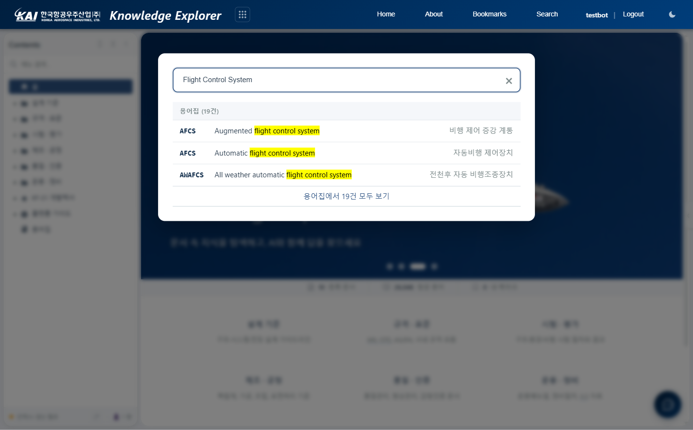

Knowledge Explorer — 기술 문서 탐색 및 AI 질의 시스템
Explorer는 등록된 기술 문서를 트리 구조로 탐색하고, 하이브리드 검색(키워드 + 벡터)으로 원하는 정보를 찾으며, AI 채팅을 통해 문서 기반 질의응답을 수행하는 시스템입니다.
Explorer는 지식 탐색을 위한 세 가지 경로를 제공합니다. 좌측 트리 메뉴에서 문서를 직접 탐색하거나, 검색으로 키워드·의미 기반 검색을 수행하거나, AI 채팅으로 자연어 질문에 대한 답변을 받을 수 있습니다.
Explorer 메인 화면 — 좌측 트리 메뉴, 중앙 콘텐츠, 우측 섹션 네비게이션
좌측 Contents 패널의 트리 메뉴에서 문서를 선택하면 중앙 영역에 콘텐츠가 로드됩니다. 상단에 브레드크럼 경로가 표시되며, 우측 "On this page" 패널에서 문서 내 섹션을 확인할 수 있습니다.
| 기능 | 설명 |
|---|---|
| 트리 메뉴 | 계층형 문서 목록. 폴더를 펼치거나 접어 탐색합니다. 상단 검색창에서 메뉴 내 필터링이 가능합니다. |
| 브레드크럼 | 현재 문서의 위치를 경로로 표시합니다. 상위 카테고리를 클릭하여 이동할 수 있습니다. |
| On this page | 문서 내 제목(h1/h2/h3) 목록을 자동 생성합니다. 클릭 시 해당 섹션으로 이동합니다. Auto Track을 켜면 스크롤에 따라 현재 위치가 자동 추적됩니다. |
| URL 공유 | 현재 문서의 URL을 복사하면 다른 사용자에게 공유할 수 있습니다. 브라우저 뒤로/앞으로도 지원됩니다. |
상단 Search 버튼을 클릭하면 검색 오버레이가 열립니다. 등록된 전체 문서를 대상으로 검색하며, 결과를 클릭하면 해당 문서의 해당 섹션으로 이동합니다.
| 검색 방식 | 설명 |
|---|---|
| 키워드 검색 | 입력한 단어가 포함된 문서를 찾습니다. 2글자 이상 입력 시 동작합니다. |
| 벡터 검색 | bge-m3 임베딩을 사용하여 의미적으로 유사한 문서를 찾습니다. 정확한 단어가 없어도 관련 내용을 검색합니다. |
| 하이브리드 | 키워드와 벡터 결과를 RRF(Reciprocal Rank Fusion)로 병합합니다. 기본 설정이며, 가장 정확도가 높습니다. |
검색 결과를 클릭하면 해당 문서가 로드되고, 검색어가 본문에 하이라이트 표시됩니다. 결과에 섹션 정보가 포함된 경우 해당 위치로 자동 스크롤됩니다.

검색 결과 — 키워드 하이라이트 및 섹션 이동
화면 우하단의 채팅 버튼을 클릭하면 AI 채팅 패널이 열립니다. 등록된 문서를 기반으로 질문에 답변하며, 답변에 출처(문서명, 섹션)가 함께 표시됩니다.
질문을 입력하면 AI가 등록된 문서에서 관련 내용을 검색(RAG)한 뒤, 해당 내용을 근거로 답변을 생성합니다. 답변은 실시간 스트리밍으로 표시되며, 출처 링크를 클릭하면 원문 섹션으로 이동합니다.

AI 채팅 — 문서 기반 질의응답 및 출처 표시
문서 내 제목(h1, h2) 옆의 별 아이콘을 클릭하면 해당 섹션이 북마크에 등록됩니다. 상단 Bookmarks 메뉴에서 저장된 북마크 목록을 확인하고, 클릭하여 해당 위치로 이동할 수 있습니다.
| 항목 | 설명 |
|---|---|
| 등록 | 제목 옆 별 아이콘(☆) 클릭 → 채워진 별(★)로 변경되며 등록 |
| 조회 | 상단 Bookmarks 메뉴 클릭 → 오버레이에 목록 표시 |
| 이동 | 목록에서 항목 클릭 → 해당 문서의 해당 섹션으로 이동 |
| 저장 | 브라우저 localStorage에 저장. 같은 브라우저에서 유지됩니다. |
| 설정 | 설명 |
|---|---|
| 다크모드 | 상단 우측 테마 토글 버튼으로 라이트/다크 모드를 전환합니다. 설정은 브라우저에 저장됩니다. |
| 사이드바 접기 | 좌측 Contents 패널과 우측 On this page 패널을 각각 접거나 펼칠 수 있습니다. 접으면 콘텐츠 영역이 넓어집니다. |
| 채팅 확장 | AI 채팅 패널을 전체 화면으로 확장할 수 있습니다. |